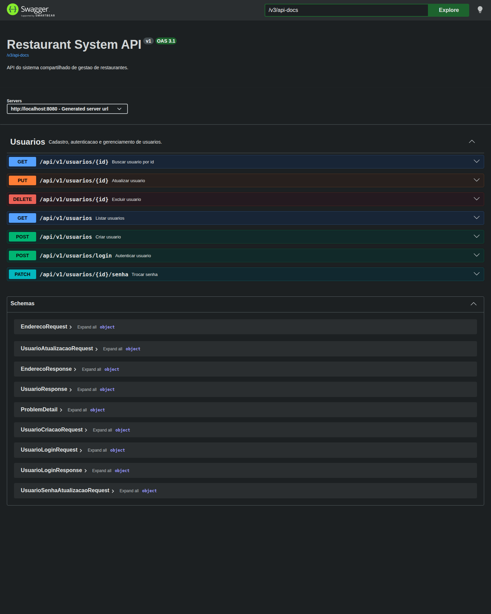
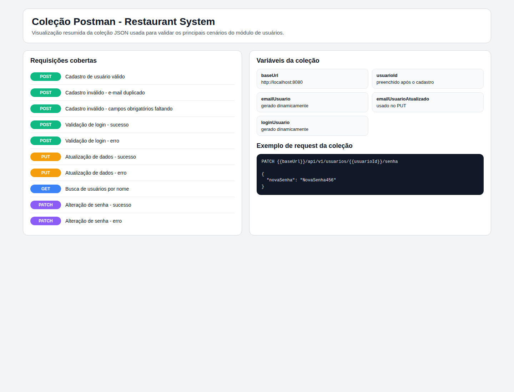

Backend em Spring Boot para um sistema compartilhado de gestão de restaurantes, com foco nesta etapa no módulo de usuários, documentação de API, persistência em PostgreSQL e execução orquestrada com Docker Compose.
O projeto foi estruturado como um backend REST versionado em /api/v1, com separação em camadas,
persistência relacional em PostgreSQL, autenticação simples sem Spring Security e documentação operacional
tanto por Swagger/OpenAPI quanto por coleção Postman. O relatório foi montado para ser autossuficiente:
todas as informações exigidas pelo enunciado estão consolidadas neste PDF.
O Restaurant System é o backend de um sistema compartilhado de gestão de restaurantes. A ideia central do desafio é permitir que múltiplos estabelecimentos utilizem uma mesma base tecnológica, reduzindo custo de implantação e padronizando os serviços digitais disponibilizados aos usuários finais.
Na etapa atual, o escopo implementado está concentrado no domínio de usuários. Foram contemplados os dois tipos
obrigatórios do enunciado: CLIENTE e DONO_RESTAURANTE. O sistema já disponibiliza
operações de cadastro, consulta, atualização, exclusão, busca por nome, troca de senha em endpoint separado
e validação simples de login.
| Item | Como está implementado |
|---|---|
| Versionamento de API | Prefixo de caminho /api/v1 |
| Erros padronizados | Uso de ProblemDetail com respostas RFC 7807 |
| Banco relacional | PostgreSQL em execução local e também via Docker Compose |
| Documentação de API | Swagger UI e OpenAPI JSON expostos pela aplicação |
| Coleção de testes | Arquivo JSON do Postman com os principais cenários do módulo |
A aplicação segue uma arquitetura monolítica em camadas. Esse desenho foi adotado porque o escopo atual ainda é concentrado em um único domínio funcional, e a separação em camadas já fornece clareza suficiente de responsabilidade, testabilidade e evolução incremental do código.
| Camada | Responsabilidade | Arquivos centrais |
|---|---|---|
| Controller | Recebe as requisições HTTP, mapeia rotas, aplica validação de entrada e devolve contratos de API. | UsuarioController.java |
| DTO | Define contratos de entrada e saída, evitando expor diretamente a entidade persistida. | UsuarioCriacaoRequest, UsuarioAtualizacaoRequest, UsuarioResponse |
| Service | Centraliza regras de negócio, valida unicidade, autentica usuário e orquestra persistência. | UsuarioService.java |
| Repository | Executa consultas e persistência com Spring Data JPA. | UsuarioRepository.java |
| Model | Representa o domínio persistido, constraints estruturais e lifecycle da entidade. | Usuario.java, Endereco.java, TipoUsuario.java |
| Common | Concentra configurações transversais, segurança criptográfica e tratamento de exceções. | OpenApiConfig.java, PasswordConfig.java, GlobalExceptionHandler.java |
/api/v1.BCryptPasswordEncoder para armazenar senha em hash.schema.sql para criação da estrutura do banco.GlobalExceptionHandler.O modelo atual foi mantido propositalmente enxuto porque a etapa implementada ainda está concentrada no domínio de usuários. Mesmo assim, os elementos já estão estruturados de forma compatível com a expansão futura do sistema.
| Campo | Tipo | Obrigatoriedade / regra | Observação |
|---|---|---|---|
id |
Long | Gerado automaticamente | Chave primária |
nome |
String | Obrigatório, até 120 caracteres | Validado no DTO de criação e atualização |
email |
String | Obrigatório, único, formato de e-mail | Normalizado em minúsculas e validado na regra de negócio |
login |
String | Obrigatório, único | Usado na autenticação simples |
senha |
String | Obrigatória | Nunca retorna na API; é persistida com hash BCrypt |
dataUltimaAlteracao |
LocalDateTime | Obrigatório | Atualizado automaticamente pela entidade |
endereco |
Endereco | Obrigatório | Persistido como objeto embutido na mesma tabela |
tipoUsuario |
Enum | Obrigatório | Persistido como texto: CLIENTE ou DONO_RESTAURANTE |
O endereço foi modelado com @Embeddable. Isso significa que não existe tabela separada para
endereço nesta etapa. Os campos de endereço ficam na mesma estrutura da tabela usuarios,
simplificando o modelo sem perder expressividade.
Todos os endpoints do módulo de usuários estão versionados em /api/v1/usuarios.
A tabela abaixo resume método, finalidade, contrato principal e erros esperados.
| Método | Endpoint | Finalidade | Entrada principal | Sucesso | Erros esperados |
|---|---|---|---|---|---|
| POST | /api/v1/usuarios |
Cadastrar usuário | UsuarioCriacaoRequest |
201 |
400, 409 |
| POST | /api/v1/usuarios/login |
Validar login e senha | UsuarioLoginRequest |
200 |
400, 401 |
| GET | /api/v1/usuarios |
Listar usuários e filtrar por nome e tipo | Query params opcionais | 200 |
- |
| GET | /api/v1/usuarios/{id} |
Buscar usuário por id | Path param | 200 |
404 |
| PUT | /api/v1/usuarios/{id} |
Atualizar dados cadastrais | UsuarioAtualizacaoRequest |
200 |
400, 404, 409 |
| PATCH | /api/v1/usuarios/{id}/senha |
Trocar senha | UsuarioSenhaAtualizacaoRequest |
204 |
400, 404 |
| DELETE | /api/v1/usuarios/{id} |
Excluir usuário | Path param | 204 |
404 |
POST /api/v1/usuarios
Content-Type: application/json
{
"nome": "Maria Oliveira",
"email": "maria@restaurante.com",
"login": "maria.oliveira",
"senha": "SenhaSegura123",
"tipoUsuario": "DONO_RESTAURANTE",
"endereco": {
"rua": "Rua das Flores",
"numero": "120",
"complemento": "Sala 2",
"cidade": "Sao Paulo",
"cep": "01001-000"
}
}
Resposta 201 Created
{
"id": 1,
"nome": "Maria Oliveira",
"email": "maria@restaurante.com",
"login": "maria.oliveira",
"dataUltimaAlteracao": "2026-04-29T20:30:00",
"endereco": {
"rua": "Rua das Flores",
"numero": "120",
"complemento": "Sala 2",
"cidade": "Sao Paulo",
"cep": "01001-000"
},
"tipoUsuario": "DONO_RESTAURANTE"
}
POST /api/v1/usuarios
Content-Type: application/json
{
"nome": "",
"email": "",
"login": "",
"senha": "123",
"tipoUsuario": null,
"endereco": {
"rua": "",
"numero": "",
"cidade": "",
"cep": ""
}
}
Resposta 400 Bad Request - application/problem+json
{
"type": "about:blank",
"title": "Dados invalidos",
"status": 400,
"detail": "A requisicao possui campos invalidos.",
"instance": "/api/v1/usuarios",
"errors": {
"email": "E-mail invalido"
}
}
POST /api/v1/usuarios/login
Content-Type: application/json
{
"login": "maria.oliveira",
"senha": "SenhaSegura123"
}
Resposta 200 OK
{
"id": 1,
"nome": "Maria Oliveira",
"email": "maria@restaurante.com",
"login": "maria.oliveira",
"tipoUsuario": "DONO_RESTAURANTE"
}
Resposta 401 Unauthorized - application/problem+json
{
"type": "about:blank",
"title": "Credenciais invalidas",
"status": 401,
"detail": "Login ou senha invalidos.",
"instance": "/api/v1/usuarios/login"
}
PUT /api/v1/usuarios/1
Content-Type: application/json
{
"nome": "Maria Oliveira Atualizada",
"email": "maria.atualizada@restaurante.com",
"login": "maria.atualizada",
"tipoUsuario": "DONO_RESTAURANTE",
"endereco": {
"rua": "Avenida Central",
"numero": "500",
"complemento": "Conjunto 10",
"cidade": "Sao Paulo",
"cep": "04567-000"
}
}
PATCH /api/v1/usuarios/1/senha
Content-Type: application/json
{
"novaSenha": "NovaSenha456"
}
Resposta 204 No Content
GET /api/v1/usuarios?nome=Maria
A aplicação padroniza respostas de erro com ProblemDetail, seguindo o modelo do RFC 7807.
Isso evita respostas ad hoc e facilita o consumo da API tanto por frontend quanto por clientes externos.
| Status | Quando ocorre | Título retornado |
|---|---|---|
400 |
Falha de validação em DTO | Dados invalidos |
401 |
Login ou senha incorretos | Credenciais invalidas |
404 |
Usuário não encontrado | Recurso nao encontrado |
409 |
Violação de regra de negócio ou integridade | Violacao de regra de negocio ou Violacao de integridade |
Exemplo de estrutura devolvida pela API
{
"type": "about:blank",
"title": "Violacao de regra de negocio",
"status": 409,
"detail": "Ja existe um usuario cadastrado com este e-mail.",
"instance": "/api/v1/usuarios"
}
A documentação da API foi implementada com SpringDoc OpenAPI. O recurso possui dois pontos principais: uma interface visual para navegação e testes manuais e um documento JSON estruturado para integração, auditoria e automação.
| Recurso | Endereço | Uso |
|---|---|---|
| Swagger UI | http://localhost:8080/swagger-ui.html |
Navegação visual pelas rotas, contratos e respostas |
| OpenAPI JSON | http://localhost:8080/v3/api-docs |
Documento bruto da API em formato OpenAPI 3.1 |

ProblemDetail@Bean
public OpenAPI restaurantSystemOpenApi() {
return new OpenAPI().info(new Info()
.title("Restaurant System API")
.version("v1")
.description("API do sistema compartilhado de gestao de restaurantes."));
}
{
"openapi": "3.1.0",
"info": {
"title": "Restaurant System API",
"description": "API do sistema compartilhado de gestao de restaurantes.",
"version": "v1"
},
"paths": {
"/api/v1/usuarios": {
"post": {
"summary": "Criar usuario"
}
},
"/api/v1/usuarios/login": {
"post": {
"responses": {
"401": {
"description": "Login ou senha invalidos."
}
}
}
}
}
}
Além do Swagger, o projeto inclui uma coleção Postman em formato JSON para apoiar testes manuais orientados por fluxo. Esse arquivo cobre os cenários principais do módulo de usuários e reduz o esforço de montagem manual das requisições.
docs/restaurant-system.postman_collection.json
A coleção usa variáveis para base URL, id do usuário e dados gerados dinamicamente.

| Cenário | Método / rota | Objetivo |
|---|---|---|
| Cadastro de usuário válido | POST /api/v1/usuarios |
Criar um registro base para os demais testes |
| Cadastro inválido por e-mail duplicado | POST /api/v1/usuarios |
Validar unicidade do e-mail |
| Cadastro inválido por campos faltando | POST /api/v1/usuarios |
Validar obrigatoriedade e formato de dados |
| Login com sucesso | POST /api/v1/usuarios/login |
Validar credenciais corretas |
| Login com erro | POST /api/v1/usuarios/login |
Validar retorno 401 para senha incorreta |
| Atualização de dados com sucesso | PUT /api/v1/usuarios/{id} |
Atualizar dados cadastrais sem envolver senha |
| Atualização de dados com erro | PUT /api/v1/usuarios/{id} |
Validar rejeição de payload inválido |
| Busca por nome | GET /api/v1/usuarios?nome=Maria |
Exercitar filtro por nome |
| Troca de senha com sucesso | PATCH /api/v1/usuarios/{id}/senha |
Validar endpoint exclusivo de senha |
| Troca de senha com erro | PATCH /api/v1/usuarios/{id}/senha |
Validar regra mínima da nova senha |
PATCH {{baseUrl}}/api/v1/usuarios/{{usuarioId}}/senha
Content-Type: application/json
{
"novaSenha": "NovaSenha456"
}
{
"baseUrl": "http://localhost:8080",
"usuarioId": "",
"emailUsuario": "",
"emailUsuarioAtualizado": "",
"loginUsuario": ""
}
O projeto utiliza PostgreSQL como banco relacional. No ambiente principal, a estrutura é inicializada por
src/main/resources/schema.sql. Nos testes automatizados, a aplicação usa PostgreSQL via
Testcontainers, com ciclo independente do ambiente principal.
spring.datasource.url configurável por variável de ambientespring.jpa.hibernate.ddl-auto=nonespring.sql.init.mode=alwaysddl-auto=create-drop para isolamento| Coluna | Tipo | Restrições | Origem no domínio |
|---|---|---|---|
id | BIGSERIAL | PRIMARY KEY | Usuario.id |
nome | VARCHAR(120) | NOT NULL | Usuario.nome |
email | VARCHAR(150) | NOT NULL, UNIQUE | Usuario.email |
login | VARCHAR(50) | NOT NULL, UNIQUE | Usuario.login |
senha | VARCHAR(255) | NOT NULL | Usuario.senha |
data_ultima_alteracao | TIMESTAMP | NOT NULL | Usuario.dataUltimaAlteracao |
rua | VARCHAR(150) | NOT NULL | Endereco.rua |
numero | VARCHAR(20) | NOT NULL | Endereco.numero |
complemento | VARCHAR(120) | NULL | Endereco.complemento |
cidade | VARCHAR(100) | NOT NULL | Endereco.cidade |
cep | VARCHAR(10) | NOT NULL | Endereco.cep |
tipo_usuario | VARCHAR(20) | NOT NULL, CHECK | Usuario.tipoUsuario |
CREATE TABLE IF NOT EXISTS usuarios (
id BIGSERIAL PRIMARY KEY,
nome VARCHAR(120) NOT NULL,
email VARCHAR(150) NOT NULL,
login VARCHAR(50) NOT NULL,
senha VARCHAR(255) NOT NULL,
data_ultima_alteracao TIMESTAMP NOT NULL,
rua VARCHAR(150) NOT NULL,
numero VARCHAR(20) NOT NULL,
complemento VARCHAR(120),
cidade VARCHAR(100) NOT NULL,
cep VARCHAR(10) NOT NULL,
tipo_usuario VARCHAR(20) NOT NULL,
CONSTRAINT uk_usuario_email UNIQUE (email),
CONSTRAINT uk_usuario_login UNIQUE (login),
CONSTRAINT ck_usuario_tipo_usuario CHECK (tipo_usuario IN ('CLIENTE', 'DONO_RESTAURANTE'))
);
A aplicação pode ser executada integralmente com Docker Compose, subindo tanto o backend quanto o banco de dados.
O arquivo entregue para isso é docker-compose.yml.
| Serviço | Função | Configurações relevantes |
|---|---|---|
postgres |
Banco de dados relacional | imagem postgres:16-alpine, volume persistente, healthcheck, porta host 5433 |
app |
Aplicação Spring Boot | build por Dockerfile, depende do banco saudável, porta host 8080 |
# Serviço postgres POSTGRES_DB=restaurant_system POSTGRES_USER=postgres POSTGRES_PASSWORD=postgres # Serviço app DATABASE_URL=jdbc:postgresql://postgres:5432/restaurant_system DATABASE_USERNAME=postgres DATABASE_PASSWORD=postgres
services:
postgres:
image: postgres:16-alpine
environment:
POSTGRES_DB: restaurant_system
POSTGRES_USER: postgres
POSTGRES_PASSWORD: postgres
ports:
- "5433:5432"
app:
build:
context: .
dockerfile: Dockerfile
depends_on:
postgres:
condition: service_healthy
environment:
DATABASE_URL: jdbc:postgresql://postgres:5432/restaurant_system
DATABASE_USERNAME: postgres
DATABASE_PASSWORD: postgres
ports:
- "8080:8080"
Abaixo está o procedimento completo para executar o backend com Docker Compose do zero, incluindo preparação do ambiente, subida da stack, verificação dos serviços e encerramento.
Antes de iniciar, a máquina precisa atender aos seguintes requisitos:
docker compose8080 livre para a aplicação5433 livre para o PostgreSQL exposto no hostComandos úteis para validação:
docker --version docker compose version ss -ltn | grep ':8080\|:5433'
O usuário deve trabalhar na raiz do repositório, onde estão localizados o Dockerfile
e o docker-compose.yml.
git clone https://github.com/fabriciocsantos/Restaurant-System.git cd Restaurant-System
Se o projeto já estiver clonado, basta acessar a pasta raiz:
cd /caminho/do/projeto/Restaurant-System
Nesta etapa, o Compose sobe dois serviços: o banco PostgreSQL e a aplicação Spring Boot.
Não há necessidade de criar arquivo .env, porque as variáveis já estão declaradas
diretamente no docker-compose.yml.
ls -lh Dockerfile docker-compose.yml docker compose config
Espera-se que o comando docker compose config consolide a configuração sem erro.
O serviço app é construído a partir do Dockerfile. O build compila o projeto com Maven,
gera o JAR e depois monta a imagem final com Java 21 JRE.
docker compose build
Esse passo pode demorar mais na primeira execução, porque o Docker precisa baixar as imagens-base e resolver as dependências do Maven.
Após o build, deve-se subir os dois serviços. O Compose iniciará primeiro o PostgreSQL e só depois a aplicação, respeitando o healthcheck configurado para o banco.
docker compose up -d
Se o usuário quiser acompanhar toda a subida em primeiro plano, pode usar:
docker compose up --build
Depois da subida, o próximo passo é verificar se os containers ficaram em execução e se o banco foi considerado saudável.
docker compose ps docker compose logs postgres docker compose logs app
O cenário esperado é:
postgres em execução e saudávelapp em execução na porta 8080Com os serviços no ar, o backend pode ser validado por navegador, terminal, Swagger UI ou Postman.
curl http://localhost:8080/api/v1/usuarios curl http://localhost:8080/v3/api-docs
Endereços úteis para conferência manual:
http://localhost:8080http://localhost:8080/swagger-ui.htmlhttp://localhost:8080/v3/api-docs
Como o PostgreSQL do Compose é exposto em 5433 no host, ele pode ser acessado por ferramentas
externas como DBeaver sem conflitar com um PostgreSQL local rodando em 5432.
Host: localhost Porta: 5433 Database: restaurant_system Username: postgres Password: postgres
Após a aplicação iniciar, a estrutura principal deve existir no banco, com a tabela usuarios
criada a partir do arquivo src/main/resources/schema.sql.
Quando o uso terminar, a stack pode ser derrubada preservando os dados do volume. Se houver necessidade de apagar também o volume persistente, existe um comando específico para isso.
docker compose down
Remoção completa da stack, incluindo o volume do PostgreSQL:
docker compose down -v
| Recurso | Endereço |
|---|---|
| Aplicação | http://localhost:8080 |
| Swagger UI | http://localhost:8080/swagger-ui.html |
| OpenAPI JSON | http://localhost:8080/v3/api-docs |
| Banco PostgreSQL no host | localhost:5433 |
curl http://localhost:8080/api/v1/usuarios
docker compose down
| Exigência do relatório | Cobertura neste PDF |
|---|---|
| Descrição detalhada da arquitetura | Seção 2, com tabela de camadas e diagrama de fluxo |
| Modelagem das entidades e relacionamentos | Seção 3, com diagrama de domínio e tabelas dos campos |
| Descrição dos endpoints com exemplos | Seção 4, com matriz de endpoints e blocos de request/response |
| Swagger com prints ou trechos | Seção 6, com captura real do Swagger UI e trechos de configuração e saída OpenAPI |
| Postman com prints e exemplos | Seção 7, com figura da coleção, cenários cobertos e exemplos de request |
| Estrutura do banco de dados | Seção 8, com tabela de colunas e DDL completo |
| Passo a passo com Docker Compose | Seção 9, com serviços, variáveis, comandos e URLs de acesso |
Com isso, o presente relatório consolida em um único PDF todas as evidências exigidas para a entrega formal desta etapa do projeto.